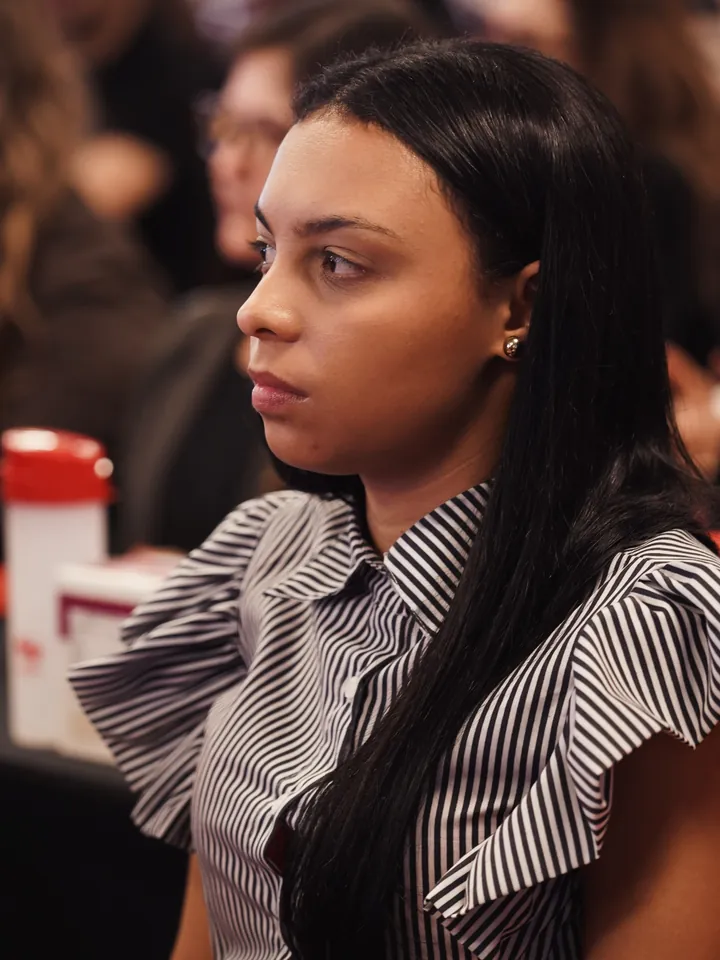
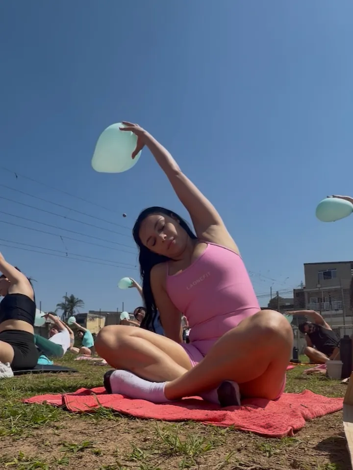
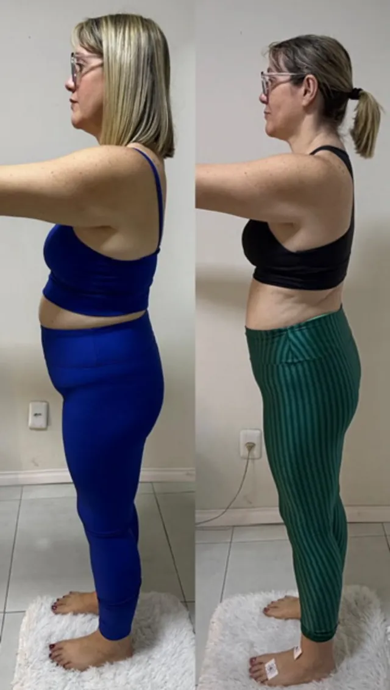

Nutricionista · Emagrecimento
Você não precisa de mais uma dieta que começa e termina.
Você precisa de acompanhamento, estratégia e alguém ao seu lado.
Yanka Vian · CRN {{PREENCHER}} · Osasco e região
Em palavras da Yanka
Os maiores luxos da vida adulta.
No fim das contas, o verdadeiro luxo não é o que você compra.
-
Você acorda e já está cansada?
Esse é o meu -
Começa na segunda e para na quinta?
Esse é o meu -
Sua rotina corrida decide o que vai no prato?
Esse é o meu -
Sair com as amigas virou um problema para a dieta?
Esse é o meu -
Inchaço e intestino preso já parecem normais?
Esse é o meu -
O cansaço acompanha você ao longo do dia?
Esse é o meu
Além da balança
O número na balança não revela toda a verdade sobre o seu corpo.
Na consulta, a Yanka usa o Scanner de Composição Corporal. O exame é rápido, indolor e o resultado chega direto no celular, de forma clara e fácil de entender.
Passe o mouse e veja o que a balança esconde.Deslize o dedo e veja o que a balança esconde.
O que o exame identifica
- Quantidade de gordura, massa magra e massa muscular
- Distribuição de líquidos: se há retenção ou desidratação
- Taxa metabólica basal: quantas calorias seu corpo gasta em repouso
- Qualidade das células, analisada pelo ângulo de fase
- Risco de desenvolver doenças metabólicas
Método Butterfly
Quem entra no meu método não recebe só um plano alimentar. Recebe a Experiência Butterfly.
Tudo pensado pra te tirar do “eu começo e paro”.
Acompanhamento
Para você parar de tentar sozinha.
Estratégia
Com dados do seu corpo, o plano fica muito mais assertivo.
Alguém ao seu lado
Porque emagrecer não é sobre força de vontade.
Quem é a Yanka
Nem tudo precisa estar perfeito para começar.
“Muitas vezes esperamos o momento perfeito para começar, quando, na verdade, só precisamos dar o primeiro passo.”
Yanka é nutricionista e acompanha mulheres que querem emagrecer cuidando da saúde, com uma avaliação que vai muito além do peso.
- Registro
- CRN {{PREENCHER}}
- Formação
- {{PREENCHER}}
- Congressos em 2026
- Ganepão, Summit de Nutrição, Naturaltech


A consulta
Você sai sentindo duas coisas.
- Que foi ouvida de verdade.
- Que recebeu um cuidado de alto nível.
Você me chama
Conta o que te trouxe até aqui e eu explico tudo.
A gente conversa
Sua rotina, seus sinais e o que já tentou.
Avaliação além do peso
Scanner de Composição Corporal e circunferência da cintura.
Plano e evolução
Um plano mais assertivo, e você acompanha sua evolução com informações reais.
Depoimentos
Histórias de quem viveu o processo.

Cada pessoa responde de um jeito. As experiências mostradas são individuais e não são promessa de resultado.
Fale comigoProjeto da Yanka
Desinflame em 15.
Quinze dias para cuidar melhor de você, melhorar sua alimentação e desenvolver hábitos que favoreçam sua saúde intestinal e metabólica.
- Plano alimentar
- Lista de compras
- Guia nutricional
- Missões diárias
- Acompanhamento pelo WhatsApp
A turma de 18/10 já começou. Para saber das novidades, entre no grupo VIP da nutri.
Entrar no grupo VIPA gente cria medo à toa. Porque se der errado, a vida continua igual. Mas se der certo, você vive o extraordinário.